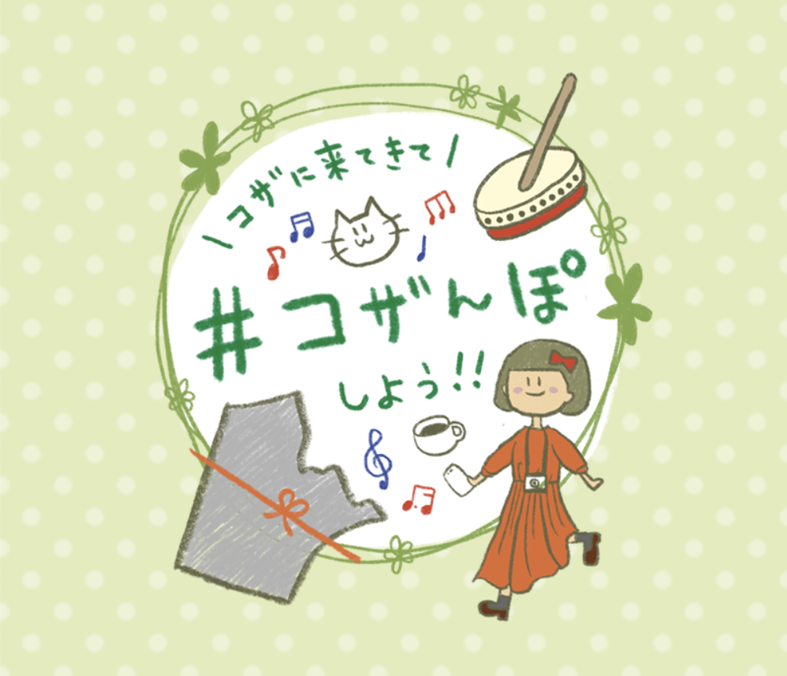

WEB

2ヶ月間プログラミングスクールに通い、卒業制作でWEBアプリケーションを作成しました。
制作期間11日間のチーム制作で、3名チームの中でフロントエンド（HTML/CSS、JavaScript）、
バックエンド（SQL、Python、Flask）で役割分担をし、私はフロントエンドを担当しました。
▼実際にリリースしたWEBアプリをご覧いただけます！
（Herokuというサービスを使用してリリースしました。）